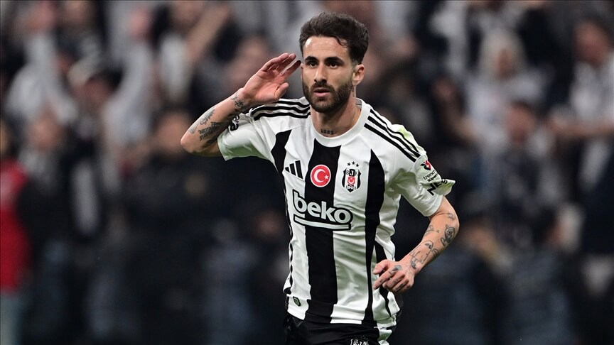

Rafa silva

Genel Bilgiler
Doğum Tarihi: 17 Mayıs 1993
Doğum Yeri: Forte da Casa, Portekiz
Pozisyon: Forvet arkası / Kanat
Boy: 1.72 m
Ayak: Sağ
Forma Numarası: 27
Kariyer
- Feirense (2012–2013): 41 maç, 10 gol
- Braga (2013–2016): 88 maç, 13 gol
- Benfica (2016–2024): 206 maç, 64 gol
- Beşiktaş (2024–günümüz): 36 maç, 13 gol
Milli Takım
Portekiz A Milli Takımı (2014–2021): 25 maç
Başarılar
- Benfica: 2016–17, 2018–19, 2022–23 Primeira Liga
- Beşiktaş: 2024 Türkiye Süper Kupa
- Portekiz: 2016 Avrupa Şampiyonası, 2019 Uluslar Ligi
2024–25 Sezonu Performansı
Maç: 49 | Gol: 18 | Asist: 12 | İlk 11 Başlangıç: 49 | Piyasa Değeri: 9 milyon €
Oyun Tarzı
Hızlı, teknik ve gole dönük bir oyun stili ile hem forvet arkası hem kanatlarda etkili olur. Beşiktaş'ta şampiyonluk hedefliyor.